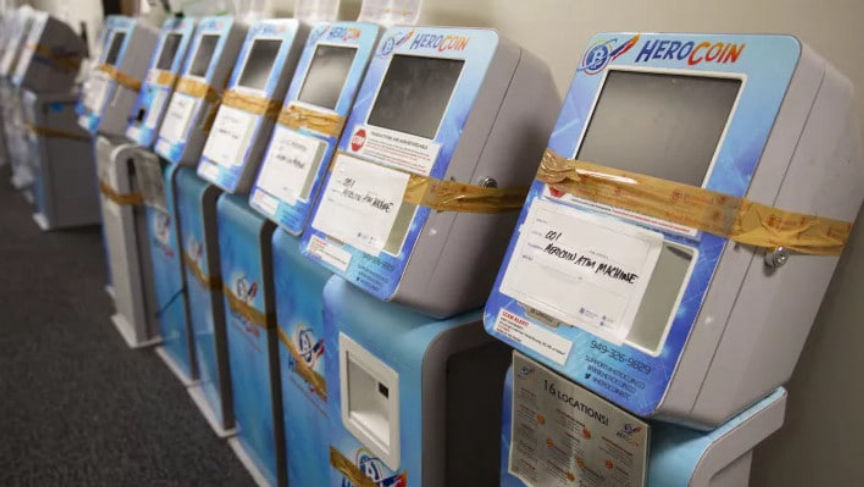
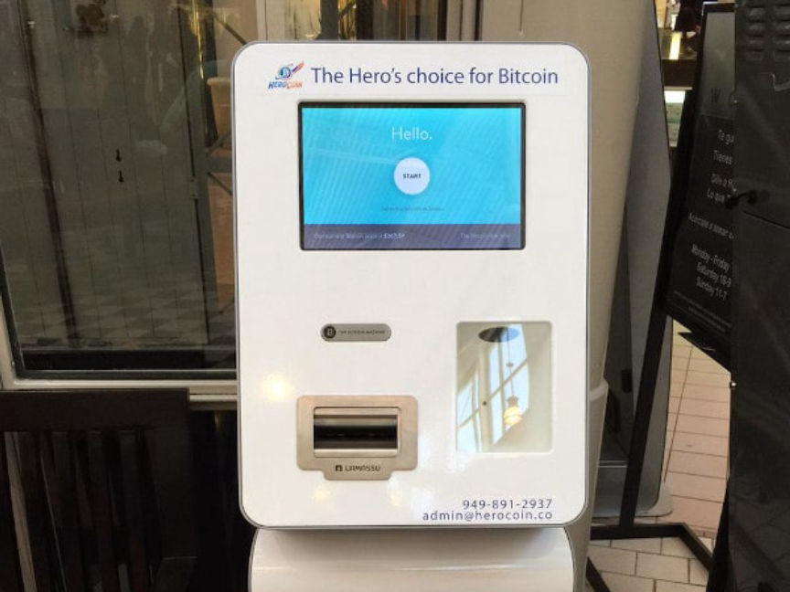
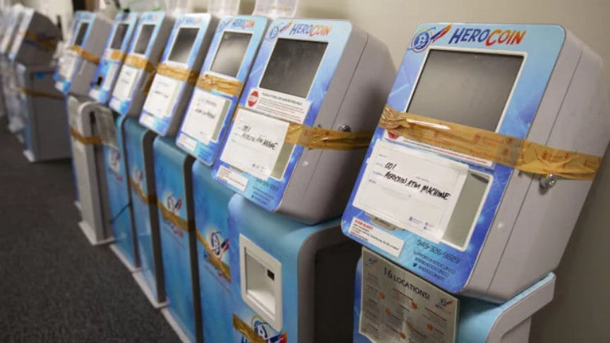
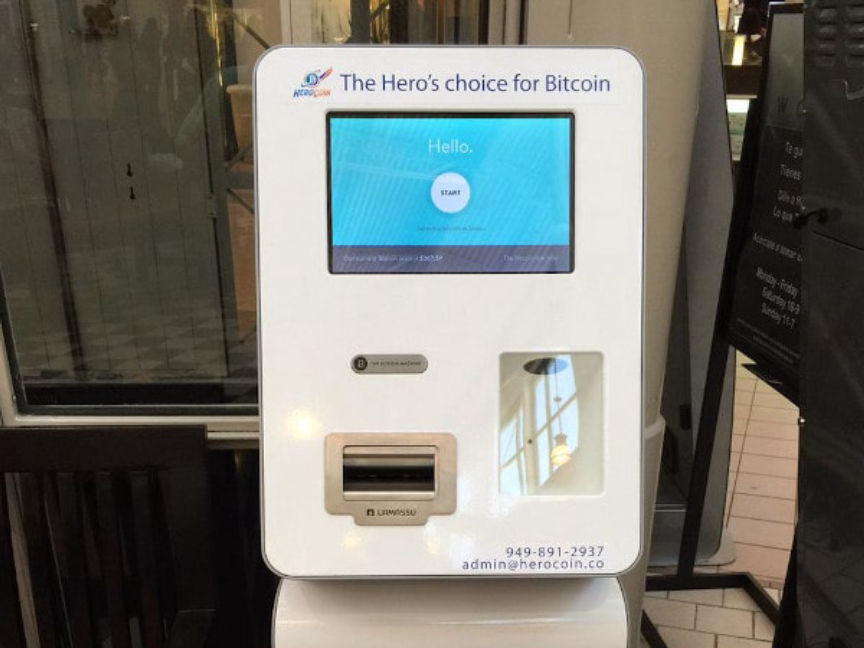

California Man Laundered up to $25m Through Bitcoin ATMs
~3 min read | Published on 2020-07-23, tagged Money-Laundering, Pleaded-Guilty using 515 words.
An Orange County man admitted laundering up to $25 million through a network of unlicensed Bitcoin ATMs and in-person exchanges. The defendant, Kais Mohammad, knew many of his customers laundered the proceeds of crime through his Bitcoin exchange network.
Kais Mohammad, 36, of Orange County, California, pleaded guilty on July 22 to one count of operating an unlicensed money transmitting business, one count of money laundering, and one count of failure to maintain an effective anti-money laundering program.

According to information revealed in court, Mohammad operated Herocoin, a Bitcoin ATM network, between December 2014 and November 2019. United States prosecutors described Herocoin as an “illegal virtual-currency money services business.” He also exchanged a significant amount of Bitcoin for cash through LocalBitcoins under the username “Superman29.” Mohammad exchanged Bitcoin for cash at a much higher rate than the industry standard, according to prosecutors. He advertised a 25% rate for transactions up to $25,000.
On Twitter, the Herocoin account confirmed a 20% rate plus a $5 fee per transaction in response to an outraged user.
@EsmeGregson:
PEOPLE NEED TO KNOW THAT HEROCOIN charges 20% plus 5 dollar “fee” per transaction. For example: $155 deposited into a HeroCoin ATM will get $120 worth of coins in your wallet. IMO charging 25% to convert CASH into digital currency is OFFENSIVE.
@HeroCoinBTC in response to @EsmeGregson:
Hello, yes, that is our current rate which is displayed in the total price of BTC on the machine before purchase as well as the $5 transaction fee. We have deleted our tweet from over a year ago of our prior rates to avoid any confusion.
Mohammad failed to register Herocoin with the Financial Crimes Enforcement Network (FinCEN) as required by law. Mohammad registered the company in 2018 after FinCEN had contacted him about the status of his company. Even after being contacted by FinCEN, Mohammad failed to comply with their regulations, including Anti-Money Laundering (AML) measures and Know Your Customer (KYC). He similarly failed to report transactions above a certain dollar amount as required by law.

On September 12, 2018, federal investigators in an undercover capacity purchased $14,000 in Bitcoin from one of the defendant’s ATMs. Mohammad never reported the transaction. Between February and August 2019, Mohammad regularly exchanged Bitcoin for cash with undercover agents who claimed they had an illegal source of income. The agents told Mohammad they worked for a bar that employed women to provide sexual favors to patrons. On August 28, 2019, Mohammad exchanged $16,000 in Bitcoin for one of the undercover agents. He did not report any of the transactions with the agents.
Mohammad admitted exchanging between $15 million and $25 million during the operation of the Herocoin ATMs and the “Superman29” LocalBitcoins account. He admitted he failed to ask his customers about the source of their funds. He also admitted to knowing that at least one of his clients conducted illegal activity on the darkweb.
He agreed to forfeit the Bitcoin ATMs, an undisclosed amount of cash, and an undisclosed amount of cryptocurrency. He faces a maximum sentence of 30 years in prison.
Kais Mohammad, 36, of Orange County, California, pleaded guilty on July 22 to one count of operating an unlicensed money transmitting business, one count of money laundering, and one count of failure to maintain an effective anti-money laundering program.

HeroCoin ATMs
According to information revealed in court, Mohammad operated Herocoin, a Bitcoin ATM network, between December 2014 and November 2019. United States prosecutors described Herocoin as an “illegal virtual-currency money services business.” He also exchanged a significant amount of Bitcoin for cash through LocalBitcoins under the username “Superman29.” Mohammad exchanged Bitcoin for cash at a much higher rate than the industry standard, according to prosecutors. He advertised a 25% rate for transactions up to $25,000.
The HeroCoin logo displayed on the comapny's ATMs and social media profiles
On Twitter, the Herocoin account confirmed a 20% rate plus a $5 fee per transaction in response to an outraged user.
@EsmeGregson:
PEOPLE NEED TO KNOW THAT HEROCOIN charges 20% plus 5 dollar “fee” per transaction. For example: $155 deposited into a HeroCoin ATM will get $120 worth of coins in your wallet. IMO charging 25% to convert CASH into digital currency is OFFENSIVE.
@HeroCoinBTC in response to @EsmeGregson:
Hello, yes, that is our current rate which is displayed in the total price of BTC on the machine before purchase as well as the $5 transaction fee. We have deleted our tweet from over a year ago of our prior rates to avoid any confusion.
Mohammad failed to register Herocoin with the Financial Crimes Enforcement Network (FinCEN) as required by law. Mohammad registered the company in 2018 after FinCEN had contacted him about the status of his company. Even after being contacted by FinCEN, Mohammad failed to comply with their regulations, including Anti-Money Laundering (AML) measures and Know Your Customer (KYC). He similarly failed to report transactions above a certain dollar amount as required by law.

A functioning HeroCoin ATM
On September 12, 2018, federal investigators in an undercover capacity purchased $14,000 in Bitcoin from one of the defendant’s ATMs. Mohammad never reported the transaction. Between February and August 2019, Mohammad regularly exchanged Bitcoin for cash with undercover agents who claimed they had an illegal source of income. The agents told Mohammad they worked for a bar that employed women to provide sexual favors to patrons. On August 28, 2019, Mohammad exchanged $16,000 in Bitcoin for one of the undercover agents. He did not report any of the transactions with the agents.
Mohammad admitted exchanging between $15 million and $25 million during the operation of the Herocoin ATMs and the “Superman29” LocalBitcoins account. He admitted he failed to ask his customers about the source of their funds. He also admitted to knowing that at least one of his clients conducted illegal activity on the darkweb.
He agreed to forfeit the Bitcoin ATMs, an undisclosed amount of cash, and an undisclosed amount of cryptocurrency. He faces a maximum sentence of 30 years in prison.